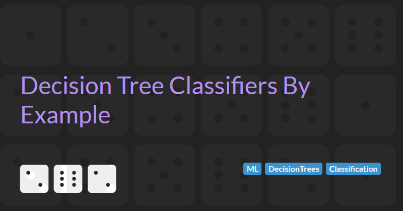

Decision Tree Classifiers By Example
Decision trees are one of the most intuitive algorithms in machine learning. They are commonly used for classification problems. These are problems where the goal is to assign labels to data, such as predicting if an email is spam, whether a customer will leave, or if a loan application should be approved.
In this article we will explore how SciKit Learn's Decision Trees can be used to solve classification type problems by trying to predict survivors of Titanic.
How Decision Trees Work
A decision tree works like a flowchart.
- Each node asks a question about a feature (for example, "Is the passenger female?").
- Based on the answer, the data follows a branch to the next question.
- Eventually, the data reaches a leaf node, which represents the predicted class (such as "Survived" or "Did not survive").
The important part is that machine learning is used to build this flowchart automatically. Instead of manually deciding which questions to ask and in what order, we train the model using labeled data. The algorithm looks at patterns in the data and figures out:
- Which features are the most informative,
- What threshold values best separate different groups,
- And how to organize these decisions in a way that leads to accurate predictions.
This makes decision trees both powerful and easy to understand. You can trace exactly how a prediction was made by following the tree's logic.
Python Prerequisites
We will by using the numpy, pandas, and sklearn Python packages throughout, so let's install them and import them so they are ready to use.
# %pip install --quiet --upgrade pip
# %pip install numpy --quiet
# %pip install PyArrow --quiet
# %pip install Pandas --quiet
# %pip install scikit-learn --quietimport pandas as pd
from sklearn.model_selection import train_test_split
from sklearn.metrics import accuracy_score
from sklearn import treeThe Titanic Dataset
The classic Kaggle Titanic dataset will be used to show how decision trees can be used to solve classification problems. In this case, the dataset includes Titanic passenger data (name, age, price of ticket, etc) and the problem we are trying to predict is who will survive and who not.
Columns in the dataset include:
| Column | Definition | Notes | |
|---|---|---|---|
| PassengerId | The unique id of the passenger | ||
| Survived | Did the passenger survive? | 1 = Yes, 0 = No | |
| Pclass | The passenger's ticket class | 1 = 1st, 2 = 2nd, 3 = 3rd | |
| Name | The passenger's name | ||
| Sex | The passenger's gender | ||
| Age | The passenger's age in years | ||
| SibSp | The number of siblings or spouses also onboard | Siblings = brother, sister, stepbrother, stepsister. Spouses = husband, wife (mistresses and fiances were ignored) | |
| Parch | The number of parents or children also onboard | ||
| Ticket | The passenger's ticket number | ||
| Fare | The fair paid by the passenger for their ticket | ||
| Cabin | The passenger's cabin number | Not all passenger's had a cabin | |
| Embarked | The port that the passenger embarked from | C = Cherbourg, Q = Queenstown, S = Southampton | The Titanic data is provided in a CSV file. Let's load the dataset into a pandas dataframe so we can manipulate is more easily. |
titanic_data = pd.read_csv("Data/titanic_train.csv")
titanic_data["Survived"].value_counts()Survived
0 549
1 342
Name: count, dtype: int64
Some simple analysis of the data shows 342 passengers survived and 549 perished (about 62%).
Data Wrangling
In statistics and machine learning, variables are generally divided into two main types: categorical and continuous. Understanding the difference between these types is essential, because they are handled differently during data preprocessing and model training.
Categorical variables are features that represent distinct groups or labels. Examples include sex (male, female), passenger class (first, second, third), or port of embarkation (C, Q, S). These variables describe qualitative attributes and do not have a meaningful numeric order or scale. In contrast, continuous variables represent quantitative data. They include values such as age, fare, or temperature that can take on a wide range of numerical values and support arithmetic operations like averaging and subtraction.
SciKit Learn's Decision Tree does not support categorical variables (see: #5442). We therefore need to convert categorical variables into a suitable format. One of the most common techniques for this is one-hot encoding, which transforms each unique category into its own binary (0 or 1) column. For example, a Sex column with the values male and female would be split into two new columns: Sex_male and Sex_female. Each row would have a 1 in the column that matches the category and a 0 in the other. This allows models to use categorical information without treating the values as numeric or ordered, and avoids introducing unintended relationships between categories.
| Sex | Sex_male | Sex_female |
|---|---|---|
| male | 1 | 0 |
| female | 0 | 1 |
Next we define a utility function to perform one-hot encoding on a given column of a dataframe. We will use this in the subsequent analysis:
def onehot_encode(df : pd.DataFrame, column_name: str) -> tuple[pd.DataFrame, list[str]]:
categories = [f"{column_name}_{value}" for value in df[column_name].unique()]
# remove the categorical variables (if we previous called onehot_encode)
df = df.drop(categories, axis=1, errors="ignore")
temp_column_name = f"{column_name}_Temp"
# get_dummies will remove the original column, so copy the data to temp column
df[temp_column_name] = df[column_name]
df = pd.get_dummies(df, prefix=column_name, columns=[temp_column_name], dtype=float)
return df, categoriesPredicting Survivors: Women and children first
Our first hypothesis will be that woman and children were more likely to be given a place on the lifeboats and therefore will have survived. Based on this hypothesis we will use the Sex and Age columns as predictors of survival.
Let's apply our new onehot_encode function to convert the Sex column to trainable parameters Sex_male and Sex_female:
titanic_data, gender_categories = onehot_encode(titanic_data, "Sex")
titanic_data[gender_categories].value_counts()Sex_male Sex_female
1.0 0.0 577
0.0 1.0 314
Name: count, dtype: int64
Splitting the data into training and validation data sets
When building a machine learning model, it's important to test how well it performs on new, unseen data and not just the data it was trained on. This helps us understand whether the model is actually learning meaningful patterns, or simply memorizing the training data.
To do this, we split the dataset into two parts:
- Training set: This is the portion of the data the model uses to learn. It sees the input features and corresponding labels, and uses them to build internal rules.
- Validation set (sometimes called a test set): This is a separate portion of the data that the model does not see during training. After the model is trained, we use the validation set to evaluate how well it performs on data it hasn't encountered before.
This split helps prevent overfitting, which happens when a model performs very well on the training data but poorly on new data. By testing on a validation set, we get a more realistic measure of how well our model is likely to perform in real-world scenarios.
When we split data into training and validation sets, we want each set to be a fair representation of the full dataset. This is especially important when it comes to the target label we are trying to predict. Stratification helps ensure that the distribution of this label is consistent across both sets.
In the Titanic dataset, the target label is Survived, which tells us whether a passenger lived or died. This dataset is imbalanced because more passengers died than survived. If we split the data randomly, we might end up with a training set that contains mostly non-survivors or a validation set with very few survivors. This imbalance can distort how the model learns and lead to unreliable performance metrics.
Stratified sampling helps solve this problem by preserving the proportion of classes in each split. For example, if about 38% of passengers survived in the full dataset, stratification ensures that the training and validation sets also contain approximately 38% survivors. This makes sure the model is trained and tested on data that reflects the true class distribution.
In Scikit-Learn, we can use the stratify parameter in the train_test_split() function to enable this behavior.
Here’s how it looks when we:
- Split the data so that we have 80% training data and 20% validation data (
test_size=0.2). - Stratify the data using the
Survivedcolumn - Set the
random_stateto42so that every time we run the code, we get the same split (any fixed value will work, 42 is just a commonly used arbitrary value).
train, validate = (
train_test_split(
titanic_data,
test_size=0.2,
stratify=titanic_data["Survived"],
random_state=42)
)Training the model
Now that we've got the data in the right state and split out our training and validation data sets we can create our model using tree.DecisionTreeClassifier.
The max_depth parameter sets the maximum number of levels the tree is allowed to grow. In this case, we limit it to a depth of 2, which means the model can make only two splits from the root. This is useful for a few reasons:
- It keeps the model simple and interpretable.
- With only two features (
AgeandSex), deeper trees often don't add much value and may lead to overfitting.
Again we set random_state=42 to make results reproducible and ensure consistent comparisons when trying different models or parameters.
predictors = ["Age"] + gender_categories
prediction = "Survived"
x = train[predictors]
y = train[[prediction]].values
decision_tree = tree.DecisionTreeClassifier(max_depth=2, random_state=42)
decision_tree.fit(x, y)
print(tree.export_text(decision_tree, feature_names=predictors))|--- Sex_male <= 0.50
| |--- Age <= 14.75
| | |--- class: 1
| |--- Age > 14.75
| | |--- class: 1
|--- Sex_male > 0.50
| |--- Age <= 3.50
| | |--- class: 1
| |--- Age > 3.50
| | |--- class: 0
Interpreting this tree we see:
- This tree uses
Sex_maleandAgeto predict survival. - Sex is the most important factor (providing the most information) and is used in the first split.
- If the passenger is female (Sex_male <= 0.5): predict survived, regardless of age.
- If the passenger is male:
- Age ≤ 6.5: predict survived.
- Age > 6.5: predict did not survive.
- The tree is balanced: both sides of the tree split once more, keeping it simple and interpretable.### Evaluate the model
Now that we have trained our decision tree, one of the first things we check is its accuracy i.e. the percentage of correct predictions the model makes on the validation set. But how do we know if that accuracy is actually meaningful?
A helpful baseline is to compare the model's accuracy to the accuracy of a random guess. In a binary classification problem like predicting Titanic survival (Survived = 0 or 1), a random guess would mean selecting either class with equal probability. This is similar to flipping a coin, which gives an expected accuracy of around 50%.
However, the Titanic dataset is imbalanced. More passengers died than survived. This means that even a simple strategy like always predicting the majority class (in this case, "Did not survive") can perform better than random. We know from the analysis we did above that approximately 62% of the passengers did not survive, always predicting "Did not survive" would be correct 62% of the time. This is called the majority class baseline.
So when we evaluate our model, we should ask two questions:
- Is the accuracy better than a random guess, which would be about 50%?
- Is the accuracy better than always guessing the majority class, which would be around 62% in this dataset?
Let's evaluate our simple model to see how accurate it is:
predictions = decision_tree.predict(validate[predictors])
actuals = validate[[prediction]].values
score = accuracy_score(actuals, predictions)
print(f'Simple "Women and children first" hypothesis has accuracy of: {score *100:.2f}%')Simple "Women and children first" hypothesis has accuracy of: 75.98%
Our decision tree achieves an accuracy significantly higher than these baselines. Therefore we can be confident that the model is learning meaningful patterns from the data instead of simply guessing.## Improving Predictions: Is class a factor?
Let's see if we can improve the accuracy of our decision tree by adding the ticket class into the model. Our hypothesis here is that 1st and 2nd class passengers are closer to the lifeboats and will more easily be able to reach them than 3rd class passengers.
Let's apply our onehot_encode function to the Pclass column:
titanic_data, class_categories = onehot_encode(titanic_data, "Pclass")
titanic_data[class_categories].value_counts()Pclass_3 Pclass_1 Pclass_2
1.0 0.0 0.0 491
0.0 1.0 0.0 216
0.0 1.0 184
Name: count, dtype: int64
And now let's train a new model combining Age, Sex, and Pclass.
Again we will restrict the value of the max_depth parameter, but this time we will set it to 3 as we have 3 variables.
train, validate = train_test_split(titanic_data, test_size=0.2, random_state=42)
predictors = ["Age"] + gender_categories + class_categories
prediction = "Survived"
x = train[predictors]
y = train[[prediction]].values
decision_tree = tree.DecisionTreeClassifier(max_depth=3, random_state=42)
decision_tree.fit(x, y)
print(tree.export_text(decision_tree, feature_names=predictors))|--- Sex_male <= 0.50
| |--- Pclass_3 <= 0.50
| | |--- Age <= 2.50
| | | |--- class: 0
| | |--- Age > 2.50
| | | |--- class: 1
| |--- Pclass_3 > 0.50
| | |--- Age <= 36.50
| | | |--- class: 1
| | |--- Age > 36.50
| | | |--- class: 0
|--- Sex_male > 0.50
| |--- Age <= 6.50
| | |--- Pclass_3 <= 0.50
| | | |--- class: 1
| | |--- Pclass_3 > 0.50
| | | |--- class: 0
| |--- Age > 6.50
| | |--- Pclass_1 <= 0.50
| | | |--- class: 0
| | |--- Pclass_1 > 0.50
| | | |--- class: 0
The tree is more complicate this time but we see similar patterns:
- This tree uses
Sex_male,Pclass_3, andAgeto predict survival. - Sex is the most important factor (providing the most information) and is used in the first split.
- The tree is balanced: both sides of the tree split once more, keeping it simple and interpretable.### Evaluating The Impact of Class
Let's evaluate our new model to see how accurate it is:
predictions = decision_tree.predict(validate[predictors])
actuals = validate[[prediction]].values
score = accuracy_score(actuals, predictions)
print(f'"Women and children first (as long as you are not 3rd class)" hypothesis has accuracy of: {score *100:.2f}%')"Women and children first (as long as you are not 3rd class)" hypothesis has accuracy of: 80.45%
Our decision tree using Pclass alongside Age and Sex achieves a better accuracy that the decision tree that just used Age and Sex and significantly higher than the baselines. Therefore we can be confident that Pclass adds some additional predictive power to the model.
Final Thoughts
Decision trees are powerful and interpretable tools, especially when you're getting started with classification. While this example was simple, it mirrors real-world machine learning workflows: data cleaning, feature selection, model training, and evaluation.
Next Steps:
- Try using more features like
Fare,Embarked, orSibSp. - Experiment with different
max_depthvalues. - Try other models like
RandomForestClassifierfor improved accuracy.
The full source code of this notebook can be accessed via GitHub.